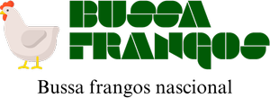

• Biosecurity is a set of prophylactic measures capable of maintaining the healthy integrity of chicks. • The term used to describe the general strategy or set of measures taken to prevent infectious diseases in a production area.
There is a case of the existence of living organisms inside the poultry, which can cause the existence of these bacteria. for example, if we treat a stump with a certain medication, there will come a time when the birds will catch that stump that even giving that medication, the cure will have no effect on the birds because the bacteria have already become very strong in relation to itself healing, which is why it is always good to respect this issue for the sake of this cause. However, we also have to observe the distribution of the chicks during the first seven days in what has to do with aspects such as: Temperature, because the same chicks are the ones that dictate the case of the environment inside the aviary. However, this implies that the same chicks must demonstrate actions such as drinking, playing running from one side to the other occupying the entire extinct of the aviary, thus it will be proof positive that the environment in which they will be will be good. If we see that they are forming groups, agglomerating in quantities occupying the corners of the walls, this is to imply that the temperature inside the aviary is very low or has high temperatures. And this is the only way the birds have that makes us have a perception, and if there is the case of the same birds being very close to the heat or rather, to the lamps, this implies that the environment of the aviary is very cold because soon, the birds run to the heat source, and if the same action that the same birds show when they run to the heat source, after a while we can notice that they don't eat or water well, which means that we will have a delay in the growth of the birds. same. And if by chance we have chicks with a lower weight, in the first few days, as soon as they go without food, they will not be able to modify their own organism, which will bring a high mortality rate. Why do these two things always go together. That's why it's always good to make these little observations. Give yourself as much time as possible to perfectly monitor the temperature so that the birds are not at ease.
Is a case that if we are negligent with the birds in the sense of not taking care of them in a correct way, they will not gain stimulus to grow and in the end, they will be so lazy. However, if the equipment happens to be a little low, they will access the food, but if it is too low in the sense of the proper eaters, they will not be adjusted. The following can happen, if the equipment is too low, they will take time to grow because they will eat sitting down and if it is too high, they will not eat and the will weaken their organism, they will be very weak and easily and any disease can attack them. The best thing that will help us to understand if our birds are being taken care of in the correct way, is doing the weekly weighings because if we can't determi the development of the birds by eye, the best thing is to start doing the weekly weighing according to the weights of the expected standards because until the seventh day, birds are expect to weigh between 140g and 170g. However, during this period, the weighing is carried out in the perspective that they are at that weight and so we can determine that the birds are even at the standard weight. And from there, we'll check that everything we've been doing since the beginnin with the preparation of the aviaries, and the equipment itself, is right and if it's at the right time. However, if we notice a balance in their weight and growth, we should.
Review the conditions in which we are raising our birds so that they can feel free to express themselves.
• Isolation
• Infrastructure
• Aviary Position
• Water Availability
• Energy Supply
• Rodents, Others and Droppings
Preparing the aviary for housing provides the basis for the broiler flock to be efficient and profitable. The following checks must be made:
I. Equipment
You need to confirm that the capacity of the equipment corresponds to the number of chicks to be housed (3-100).
II. Temperature
Heading Font: [Rock Salt]
Paragraph Font: [Robote]
Normal paragraph example
Houses should be preheated so that the temperature (floor and room) and humidity stabilize before housing. Chicks are totally dependent on controlling the correct temperature of the litter. Management in the accommodation phase
• Carefully distribute the chicks during the first few days. • Temperature. • Management of Feeders and Drinkers. • Check Weight Weekly.
>1-Correct form: • Chicks chirping, spread out evenly.
2-Very Cold:
• Chicks Chirping, Scattered Under the Bell.
Ventilation
• It is the amount of air volume needed to allow full genetic potential; • Supply of oxygen to meet the metabolic needs of birds; • Allow control of relative humidity; • Keep the bed in good condition; • Proper management of curtains is vital to prevent respiratory problems and ascites in cold climates.
Vaccination
Vaccination guidelines:
• Make sure the vaccine has been stored at the temperature recommended by the manufacturer; • Administer the vaccine in the coolest hours of the day; • All birds in the flock must ingest the entire vaccine within one to two hours after administration; • Walk among the birds slowly to encourage water consumption and ensure uniform application.
The main diseases of broilers that can be prevented through vaccination are: • Marek's Disease; • Gumboro Disease; • Pox pox; • Infectious bronchitis of chickens; • Newcastle disease; • coccidiosis.
The Quality Of Our Product, is The Happiness Of Our Customer.
If you like our product, please contact us via email or whatsapp. Thank you.
Colored Paragraph example Trips vary from mild and great for families, to trips exclusively for physically fit and experienced rafters. No matter what type of river adventures you are seeking, White Water Rafting Company can make it happen for you.
Good attention(Care)
Growing still in the phase of needing a lot of attention because these chicks are still in the growth phase with only 7 to 9 days and they need a lot of vitamins.
One week old (7 days).
The 10 days of life that require the chicks to be given the first vaccine called: Newcastle! Which is a vaccine that serves for immunization of light and heavy matrices.
With Eighteen Days of Life
In this Phase Chicks need a lot of food so that they can continue with a good growth posture, and this will only be possible if you are not afraid to feed them.
Good Growth
In this photo, we can see that the chicks are still in the growth phase with only 12 to 14 days.
With 15 Days of Life.
The main diseases of broilers that can be prevented through vaccination are:
• Marek's Disease.
• Gumboro Disease.
With 15 Days of Life.
The main diseases of broilers that can be prevented through vaccination are:
• Pox pox.
• Infectious bronchitis of chickens.
With 15 Days of Life.
The main diseases of broilers that can be prevented through vaccination are:
• Newcastle disease.
• coccidiosis.
With 21 days to 23 days of life.
we can notice that its development is quite striking because in our eyes the "hens", already give us the desire to call them chickens by their physical state, but the Poultry Farmer's Law still requires them to be fed perfectly for longer. 7 to 8 days.